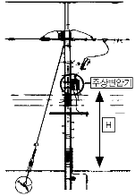

굴삭기운전기능사 (2006-04-02 기출문제)
1. 기관의 총배기량이란?
- 연소실 체적과 실린더 체적의 합이다.
- 각 실린더 행정체적의 합이다.
- 행정 체적과 실린더 체적의 합이다.
- 실린더 행정 체적과 연소실 체적의 곱이다.
(정답률: 39%)

2. 공기청정기의 설치 목적은?
- 연료의 여과와 가압작용
- 공기의 가압작용
- 공기의 여과와 소음방지
- 연료의 여과와 소음방지
(정답률: 77%)
3. 디젤기관을 정지시키는 방법으로 가장 적합한 것은?
- 초크밸브를 닫는다.
- 연료공급을 차단한다.
- 기어를 넣어 기관을 정지시킨다.
- 축전지에 연결된 전선을 끊는다.
(정답률: 83%)
4. 기관의 속도에 따라 자동적으로 분사시기를 조정하여 운전을 안정되게 하는 것은?
- 타이머
- 노즐
- 과급기
- 디콤퍼
(정답률: 64%)
5. 기관에서 냉각계통으로 배기가스가 누설되는 원인에 해당되는 것은?
- 실린더헤드 가스켓 불량
- 매니폴더의 가스켓 불량
- 워터펌프 불량
- 냉각팬벨트 유격 과대
(정답률: 69%)
6. 압축말 연료분사노즐로부터 실린더내로 연료를 분사하여 연소시켜 동력을 얻는 행정은?
- 흡입행정
- 압축행정
- 폭발행정
- 배기행정
(정답률: 71%)
7. 오일양은 정상이나 오일압력계의 압력이 규정치보다 높을 경우 조치사항 중 옳은 것은?
- 오일을 보충한다.
- 오일을 배출한다.
- 유압조절밸브를 조인다.
- 유압조절밸브를 푼다.
(정답률: 75%)
8. 기관의 맥동적인 회전을 관성력을 이용하여 원활한 회전으로 바꾸어 주는 역할을 하는 것은?
- 크랭크축
- 피스톤
- 플라이휠
- 커넥팅로드
(정답률: 43%)
9. 기계 작동시 엔진오일 사용처가 아닌 것은?
- 피스톤
- 크랭크축
- 습식공기청정기
- 차동기어장치
(정답률: 33%)
10. 엔진작동 중 냉각수 온도가 정상적으로 올라가지 않을 때, 과냉의 원인으로 맞는 것은?
- 수온조절기의 열림
- 팬벨트의 헐거움
- 물펌프 불량
- 냉각수 부족
(정답률: 62%)
11. 다음 중 열에너지를 기계적 에너지로 변환 시켜주는 장치는?
- 펌프
- 모터
- 엔진
- 밸브
(정답률: 56%)
12. 충전장치에서 축전지 전압이 낮을 때 원인으로 틀린 것은?
- 조정전압이 낮을 때
- 다이오드가 단락되었을 때
- 축전지케이블 접속이 불량할 때
- 충전회로에 부하가 적을 때
(정답률: 49%)
13. 납산축전지의 용량은 어떻게 결정되는가?
- 극판의 크기, 극판의 수, 황산의 양에 의해 결정된다.
- 극판의 크기, 극판의 수, 셀의 수에 의해 결정된다.
- 극판의수, 셀의수, 발전기의 충전능력에 따라 결정된다.
- 극판의수와 발전기의 충전능력에 따라 결정된다.
(정답률: 55%)
14. 전조등의 좌?우램프간 회로에 대한 설명으로 맞는 것은?
- 직렬 또는 병렬로 되어있다.
- 병렬과 직렬로 되어있다.
- 병렬로 되어있다.
- 직렬로 되어있다.
(정답률: 72%)
15. 축전지의 용량만을 크게 하는 방법으로 맞는 것은?
- 직렬연결법
- 병렬연결법
- 직ㆍ병렬연결법
- 논리회로연결법
(정답률: 58%)
16. 엔진이 기동되었는데도 시동스위치를 계속 ON위치로 할 때 미치는 영향으로 맞는 것은?
- 시동전동기의 수명이 단축된다.
- 클러치디스크가 마멸된다.
- 크랭크축 저널이 마멸된다.
- 엔진의 수명이 단축된다.
(정답률: 72%)
17. 전류의 3대 작용이 아닌 것은?
- 발열작용
- 자기작용
- 물리작용
- 화학작용
(정답률: 47%)
18. 굴삭기를 크레인으로 들어 올릴 때 틀린 것은?
- 굴삭기 중량에 맞는 크레인을 사용한다.
- 굴삭기의 앞부분부터 들리도록 와이어를 묶는다.
- 와이어는 충분한 강도가 있어야 한다.
- 배관 등에 와이어가 닿지 않도록 한다.
(정답률: 83%)
19. 평탄한 노면에서의 지게차운전 하역시 올바른 방법이 아닌 것은?
- 파렛트에 실은 짐이 안정되고 확실하게 실려 있는가를 확인 한다.
- 포크는 상황에 따라 안전한 위치로 이동한다.
- 불안정한 적재의 경우에는 빠르게 작업을 진행시킨다.
- 파렛트를 사용하지 않고 밧줄로 짐을 걸어 올릴 때에는 포크에 잘 맞는 고리를 사용한다.
(정답률: 87%)
20. 휠타입 굴삭기의 동력전달장치에서 슬립이음(슬립조인트)이 변화를 가능 하게하는 것은?
- 축의길이
- 회전속도
- 드라이브각
- 축의진동
(정답률: 41%)
21. 지게차에서 화물을 취급하는 방법으로 틀린 것은?
- 포크는 화물의 받침대 속에 정확히 들어갈 수 있도록 조작한다.
- 운반물을 적재하여 경사지를 주행할 때에는 짐이 언덕 위쪽으로 향하도록 한다.
- 포크를 지면에서 약 800mm 정도 올려서 주행 한다.
- 운반 중 마스트를 뒤로 약 6°정도 경사시킨다.
(정답률: 74%)
22. 기중기의 붐이 하강하지 않는다. 그 원인에 해당 되는 것은?
- 붐과 호이스트레버를 하강 방향으로 같이 작용시켰기 때문이다.
- 붐에 큰 하중이 걸려있기 때문이다.
- 붐에 너무 낮은 하중이 걸려있기 때문이다.
- 붐호이스트브레이크가 풀리지 않는다.
(정답률: 54%)
23. 트랙식 건설장치에서 트랙의 구성 부품으로 맞는 것은?
- 슈, 조인트, 실(seal), 핀, 슈볼트
- 스프로킷, 트랙롤러, 상부롤러, 아이들러
- 슈, 스프로킷, 하부롤러, 상부롤러, 감속기
- 슈, 슈볼트, 링크, 부싱, 핀
(정답률: 48%)
24. 모터그레이더 운행에 따른 안전수칙으로 틀린 것은?
- 주차시 또는 공차로 운행시에는 삽이 옆으로 나오지 않도록 주의한다.
- 시어핀 교환시는 필 히엔진을 정지시킨다.
- 경사지를 내려갈 때에는 항상 클러치를 차단시킨다.
- 엔진 시동 후 급출발은 하지 않도록 한다.
(정답률: 78%)
25. 기계식 변속기가 장착된 건설기계에서 클러치 스프링의 장력이 약하면 어떤 현상이 발생되는가?
- 주행 속도가 빨라진다.
- 기관의 회전속도가 빨라진다.
- 기관이 정지된다.
- 클러치가 미끄러진다.
(정답률: 83%)
26. 유압식 조향장치의 핸들의 조작이 무거운 원인으로 가장 거리가 먼 것은?
- 유압이 낮다.
- 타이어의 공기압력이 너무 낮다.
- 유압계통 내에 공기가 유입되었다.
- 펌프의 회전이 빠르다.
(정답률: 61%)
27. 도로주행에 대한 설명으로 가장 거리가 먼 것은?
- 진로변경이 금지된 곳에서 도로파손으로 인한 장애물이 있을 때 진로변경을 해도 된다.
- 차로에 도로공사 등으로 인하여 장애물이 있을 때 진로변경이 금지된 곳은 진로변경을 할 수 없다.
- 차마는 안전표지로서 특별히 진로변경이 금지된 곳에서는 진로를 변경해서는 안 된다.
- 차마의 교통을 원활하게 하기위한 가변차로가 설치된 곳도 있다.
(정답률: 63%)
28. 도로교통법에 의한 1종대형면허를 가진자가 조종할 수 없는 건설기계는?
- 콘크리트펌프
- 콘크리트살포기
- 아스팔트살포기
- 노상안정기
(정답률: 27%)
29. 건설기계를 운전하여 교차로에서 녹색신호로 우회전을 하려고할 때 지켜야 할 사항으로 가장 올바른 것은?
- 우회전신호를 행하면서 빠르게 우회전한다.
- 신호를 하고 우회전하며, 속도를 빨리하여 진행한다.
- 신호를 행하면서 서행으로 주행하여야하며, 보행자가 있을 때는 보행자의 통행을 방해하지 않도록 하여 우회전한다.
- 우회전은 언제어느 곳에서나 할 수 있다.
(정답률: 88%)
30. 교차로의 가장자리 또는 도로의 모퉁이로부터 관련법상 몇m이내의 장소에 정차 및 주차를 해서는 안 되는가?
- 4
- 5
- 6
- 10
(정답률: 62%)
31. 건설기계 정기검사 대상이 아닌 장비는?
- 덤프트럭
- 믹서트럭
- 콘크리트펌프(트럭식)
- 공기압축기
(정답률: 74%)
32. 운전면허취소 처분에 해당되는 것은?
- 중앙선침범
- 신호위반
- 과속운전
- 면허정지기간에 운전한 경우
(정답률: 85%)
33. 동일방향으로 주행하고 있는 전?후차 간의 안전운전방법으로 틀린 것은?
- 뒤차는 앞차가 급정지할 때 충돌을 피할 수 있는 필요한 안전거리를 유지한다.
- 뒤에서 따라오는 차량의 속도보다 느린 속도로 진행하려고 할 때에는 진로를 양보한다.
- 앞차가 다른 재차를 앞지르고 있을 때는 빠른 속도로 앞지른다.
- 앞차는 부득이한 경우를 제외하고는 급정지?급감속을 하여서는 안 된다.
(정답률: 84%)
34. 건설기계 등록신청은 누구에게 하는가?
- 소유자의 주소지 또는 건설기계사용본거지를 관할하는 시?도지사
- 행정자치부장관
- 소유자의 주소지 또는 건설기계소재지를 관할하는 검사소장
- 소유자의 주소지 또는 건설기계 소재지를 관할하는 경찰서장
(정답률: 78%)
35. 현장에서 오일의 열화를 찾아내는 방법이 아닌 것은?
- 색깔의 변화나 수분?침전물의 유무 확인
- 흔들었을 때 생기는 거품이 없어지는 양상 확인
- 자극적인 악취의 유무확인
- 오일을 가열했을 때 냉각되는 시간 확인
(정답률: 57%)
36. 유압작동유가 갖추어야 할 성질이 아닌 것은?
- 온도에 의한 점도변화가 적을 것
- 거품이 적을 것
- 방청?방식성이 있을 것
- 물?먼지 등의 불순물과 혼합이 잘될 것
(정답률: 83%)
37. 온도변화에 따라 점도변화가 큰 오일의 점도지수는?
- 크다.
- 작다.
- 불변이다.
- 점도변화와 점도지수는 무관하다.
(정답률: 49%)
38. 기어식 유압펌프에서 소음이 나는 원인이 아닌 것은?
- 흡입라인의 막힘
- 오일량의 과다
- 펌프의베어링 마모
- 오일의과 부족
(정답률: 65%)
39. 유압펌프가 오일을 토출하지 않을 경우 점검항목 중 틀린 것은?
- 오일탱크에 오일이 규정량으로 들어있는지 점검한다.
- 흡입스트레이너가 막혀 있지 않은지 점검한다.
- 흡입관로에 공기를 빨아들이지 않는지 점검한다.
- 토출측 회로에 압력이 너무 낮은지 점검한다.
(정답률: 42%)
40. 유압펌프에서 소음이 나는 경우와 가장 거리가 먼 것은?
- 필터의 여과입도가 너무 적은 경우
- 펌프의 회전 속도가 너무 빠른 경우
- 작동유의 점도가 너무 높은 경우
- 토출관의 접합부에서 공기구멍이 발생한 경우
(정답률: 25%)
41. 맥동적토출을하지만다른펌프에비해일반적으로최고압토출이가능하고,펌프효율에서도전압력범위가높아최근에많이사용되고있는펌프는?
- 피스톤펌프
- 베인펌프
- 나사펌프
- 기어펌프
(정답률: 64%)
42. 구동되는 기어펌프의 회전수가 변하였을 때 가장 적합한 것은?
- 오일흐름의 양이 바뀐다.
- 오일압력이 바뀐다.
- 오일흐름 방향이 바뀐다.
- 회전경사판의 각도가 바뀐다.
(정답률: 38%)
43. 유압모터의 장점이 될 수 없는 것은?
- 소형?경량으로서 큰 출력을 낼 수 있다.
- 공기와 먼지 등이 침투하여도 성능에는 영향이 없다.
- 변속?역전의 제어도 용이하다.
- 속도나 방향의 제어가 용이하다.
(정답률: 72%)
44. 유압유의 첨가제가 아닌 것은?
- 소포제
- 유동점강하제
- 산화방지제
- 점도지수방지제
(정답률: 38%)
45. 오일의 무게를 맞게 계산한 것은?
- 부피 ℓ에 다비중을 곱하면 kgf가 된다.
- 부피 ℓ에 다질량을 곱하면 kgf가 된다.
- 부피 ℓ에 다비중을 나누면 kgf가 된다.
- 부피 ℓ에 다질량을 나누면 kgf가 된다.
(정답률: 44%)
46. 유압유가 과열되는 원인과 가장 거리가 먼 것은?
- 릴리프밸브(relief valve)가 닫힌 상태로 고장일 때
- 오일냉각기의 냉각핀이 오손되었을 때
- 유압유가 부족할 때
- 유압유량이 규정보다 많을 때
(정답률: 61%)
47. 가스누설검사에 가장 좋고 안전한 것은?
- 아세톤
- 성냥불
- 순수한물
- 비눗물
(정답률: 85%)
48. 겨울철연료탱크에연료를가득채우는이유중옳은것은?
- 연료가 적으면 엔진노킹이 발생한다.
- 연료가 적으면 수증기가 응축된다.
- 연료가 적으면 휘발성이 크다.
- 연료가 적으면 베이퍼록이 생긴다.
(정답률: 71%)
49. 스패너 작업 시안전 및 주의 사항으로 틀린 것은?
- 녹이생긴 볼트나 너트는 오일을 넣어 스며들게 한 다음 돌린다.
- 조정죠에 잡아당기는 힘이 가해져서는 안 된다.
- 장시간 보관할 때에는 방청제를 바르고 건조한 곳에 보관한다.
- 힘겨울 때는 파이프 등의 연장대를 끼워서 사용하여야 한다.
(정답률: 58%)
50. 기계작업시 접근하였을 때 위험하여 적절한 안전거리를 유지하여야 한다. 가장 안전거리를 크게 유지하여야하는 것은?
- 프레스
- 절단기
- 선반
- 전동띠톱기계
(정답률: 54%)
51. 작업개시전운전자의조치사항으로가장거리가먼것은?
- 점검에 필요한 점검 내용을 숙지한다.
- 운전하는 장비의 사양을 숙지 및 고장나기 쉬운 곳을 파악하여야 한다.
- 장비의 이상유무를 작업 전에 항상 점검하여야 한다.
- 주행로 상에 복수의 장비가 있을 때는 충돌방지를 위하여 주행로 양측에 콘크리트 옹벽을 친다.
(정답률: 81%)
52. 다음 그림의 안전표지판이 나타내는 것은?
- 안전제일
- 출입금지
- 인화성물질경고
- 보안경착용
(정답률: 84%)
53. 추락물의 위험이 있는 곳에 가장 적절한 보호구는?
- 귀마개
- 안전모
- 보안경
- 안전장갑
(정답률: 88%)
54. 건설산업현장에서 재해가 자주 발생하는 주요원인이 아닌 것은?
- 안전의식 부족
- 안전교육 부족
- 공사계약의 용이성
- 작업자체의 위험성
(정답률: 80%)
55. 건설기계차체의 금속부분에 묻었을 때 가장 좋지 않은 영향을 주는 것은?
- 부동액
- 와셔액
- 엔진오일
- 축전지전해액
(정답률: 66%)
56. 복스렌치가 오픈렌치보다 많이 사용되는 이유로 가장 적합한 것은?
- 볼트?너트 주위를 완전히 싸게 되어 있어서 사용 중에 미끄러지지 않는다.
- 여러 가지 크기의 볼트?너트에 사용할 수 있다.
- 값이 싸며, 적은 힘으로 작업할 수 있다.
- 가볍고, 사용하는데 양손으로도 사용할 수 있다.
(정답률: 66%)
57. 전선로와의 안전이격거리에 대하여 틀린 것은?
- 전압이 높을수록 커진다.
- 1개 줄의 애자수가 많을수록 커진다.
- 일반적으로 전선이 굵을수록 커진다.
- 전압에 관계없이 일정하다.
(정답률: 72%)
58. 도시가스배관이 자주 손상되는 사고의 원인과 가장 거리가 먼 것은?
- 되 메우기 부실에 의한 지반침하
- 그라우팅 공사시
- H빔 설치를 위한 지반 천공시
- 물을 차단하기 위한 토류판 설치시
(정답률: 47%)
59. 그림과 같이 고압가공전선로 주상변압기를 설치하는데 높이 H는 시가지 (A)와 시가지외 (B)에서 각각 몇 m인가?

- A=4.5, B=4
- A=4, B=4.5
- A=8, B=5
- A=5, B=8
(정답률: 48%)
60. LNG를 사용하는 도시지역의 가스배관공사시 주의사항으로 가장 거리가 먼 것은?
- LNG는 공기보다 가볍고 가연성 물질이다.
- 공사지역의 배관매설 여부를 해당 도시가스사업자에게 의뢰한다.
- 가스배관 좌우 30cm이상은 장비로 굴착하고, 30cm이내는 인력으로 굴착한다.
- 점화원의 휴대를 금지한다.
(정답률: 61%)